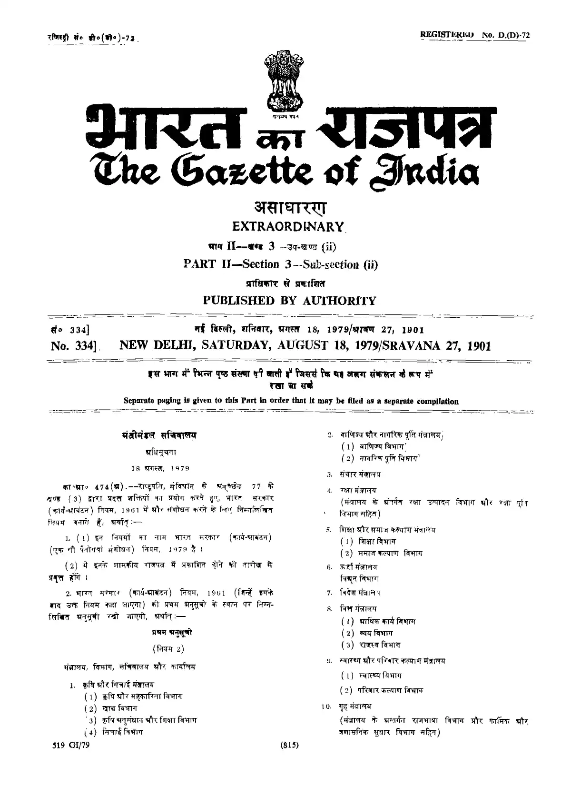
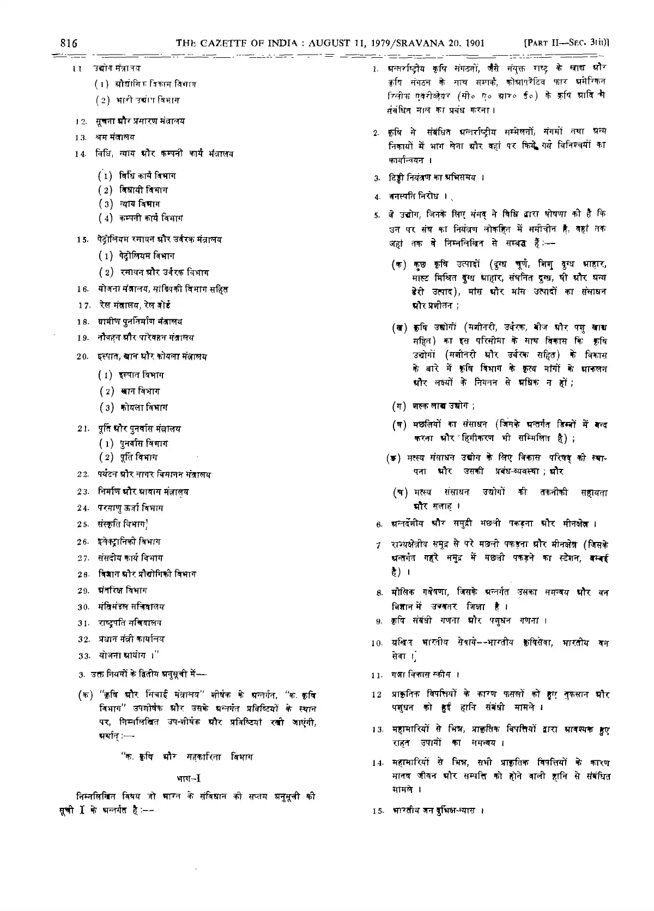
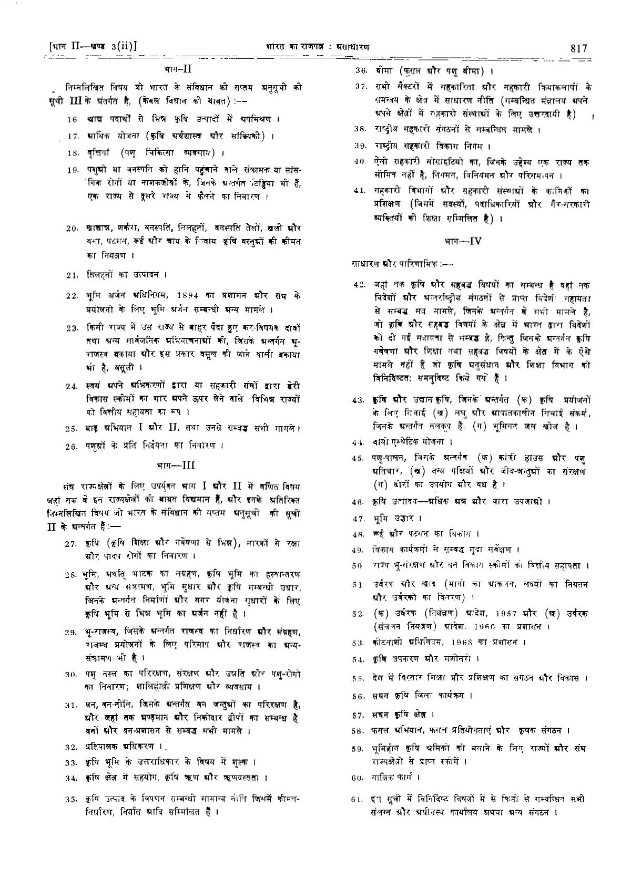
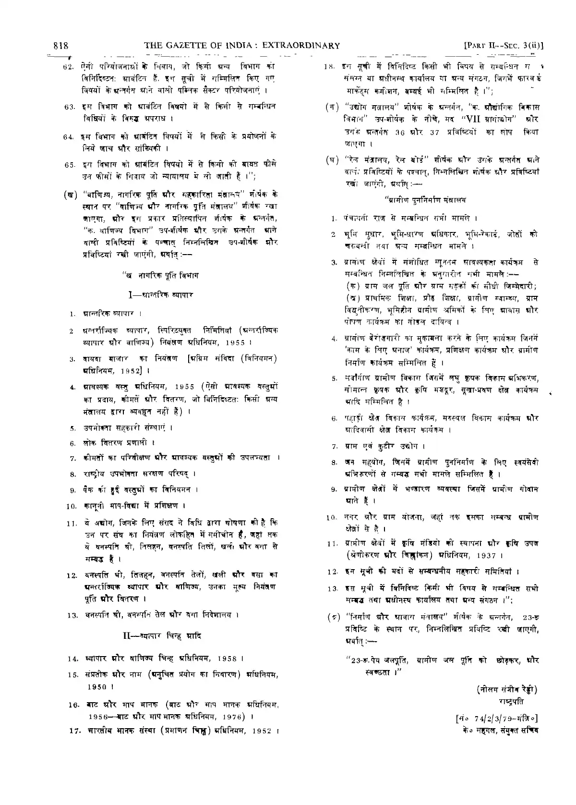
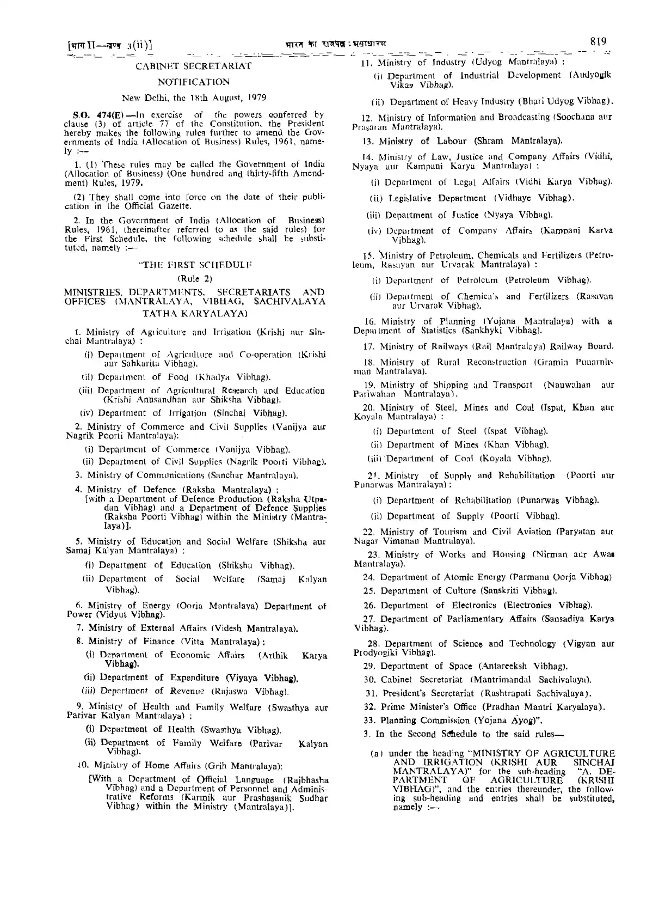
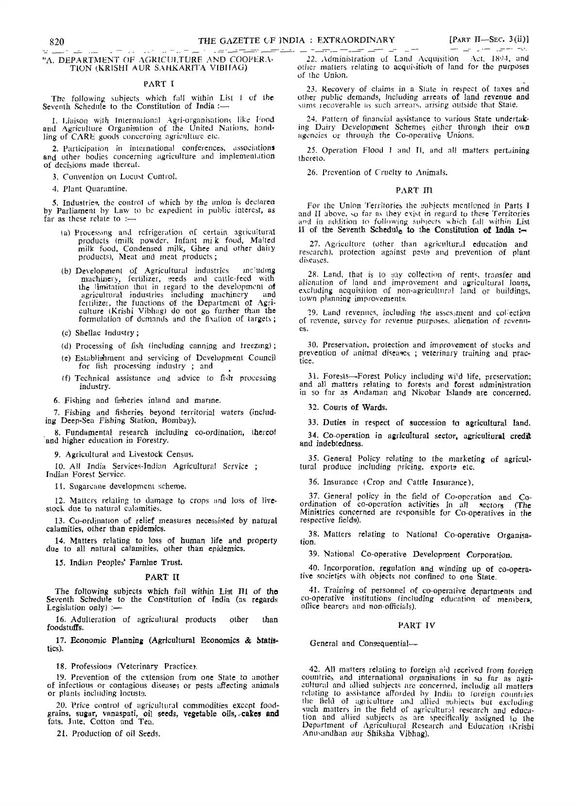
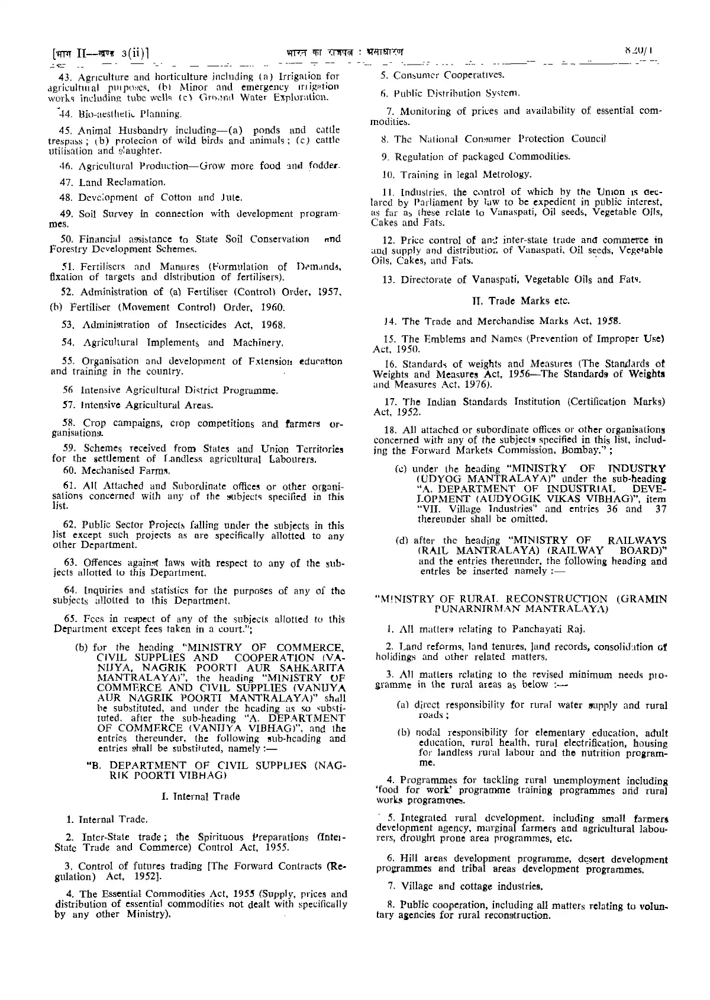
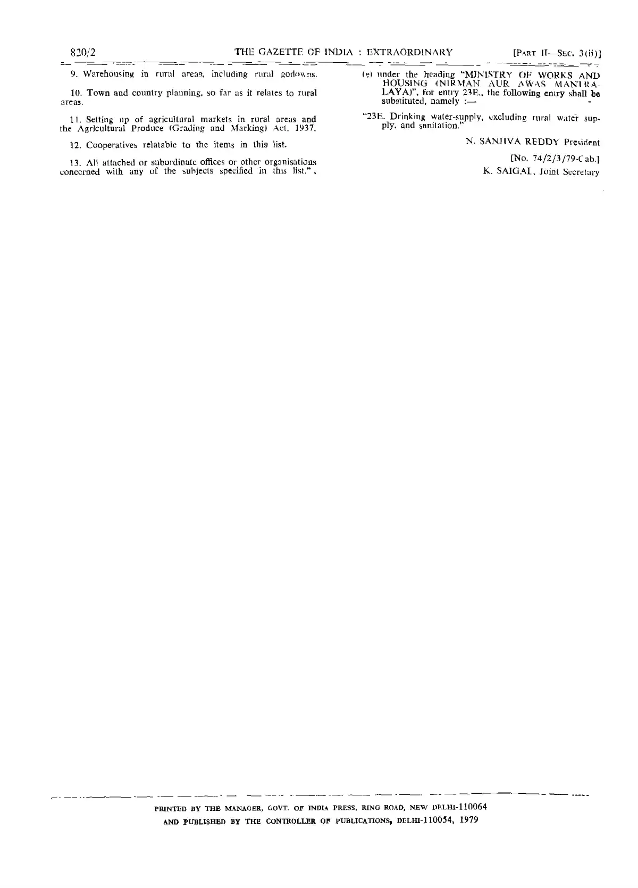

Amendment #135 (S.O. 474(E), 1979)
7 changes: 1 to the First Schedule, 6 to the Second Schedule. 7 applied
What it did to the ministries
- endedPrime Minister's Secretariat is abolished · histories: Prime Minister's Secretariat
- bornMinistry of Rural Reconstruction is created (12 subjects) change 6 · histories: Rural Development
- bornPrime Minister's Office is created (1 subject) · histories: Prime Minister's Office
- renamedMinistry of Energy is renamed Ministry of Energy Department of Power · histories: Energy
- renamedMinistry of Commerce, Civil Supplies and Cooperation is renamed Ministry of Commerce and Civil Supplies change 3, 4 · histories: Commerce and Civil Supplies
- grewMinistry of Commerce and Civil Supplies grows from 38 to 56 subjects change 3, 4 · histories: Commerce and Civil Supplies
The order, page by page
Page 1 of 8

Page 2 of 8

Page 3 of 8

Page 4 of 8

Page 5 of 8

12Schedule 1
- THE FIRST SCHEDULF (Rule 2) MINISTRIES, DEPARTMENTS, SECRETARIATS AND OFFICES (MANTRALAYA, VIBHAG, SACHIVALAYA TATHA KARYALAYA)
- 1. Ministry of Agriculture and Irrigation
- i. Department of Agriculture and Co-operation
- ii. Department of Food
- iii. Department of Agricultural Research and Education
- iv. Department of Irrigation
and 59 more
- 2. Ministry of Commerce and Civil Supplies
- i. Department of Commerce
- ii. Department of Civil Supplies
- 3. Ministry of Communications
- 4. Ministry of Defence
- -. Department of Defence Production
- -. Department of Defence Supplies
- 5. Ministry of Education and Social Welfare
- i. Department of Education
- ii. Department of Social Welfare
- 6. Ministry of Energy (Oorja Mantralaya) Department of Power
- 7. Ministry of External Affairs
- 8. Ministry of Finance
- i. Department of Economic Affairs
- ii. Department of Expenditure
- iii. Department of Revenue
- 9. Ministry of Health and Family Welfare
- i. Department of Health
- ii. Department of Family Welfare
- 10. Ministry of Home Affairs
- -. Department of Official Language
- -. Department of Personnel and Administrative Reforms
- 11. Ministry of Industry
- i. Department of Industrial Development
- ii. Department of Heavy Industry
- 12. Ministry of Information and Broadcasting
- 13. Ministry of Labour
- 14. Ministry of Law, Justice and Company Affairs
- i. Department of Legal Affairs
- ii. Legislative Department (Vidhaye Vibhag).
- iii. Department of Justice
- iv. Department of Company Affairs
- 15. Ministry of Petroleum, Chemicals and Fertilizers
- i. Department of Petroleum
- ii. Department of Chemica's and Fertilizers
- 16. Ministry of Planning (Yojana Mantralaya) with a
- Department of Statistics
- 17. Ministry of Railways (Rail Mantralaya) Railway Board.
- 18. Ministry of Rural Reconstruction
- 19. Ministry of Shipping and Transport
- 20. Ministry of Steel, Mines and Coal
- i. Department of Steel
- i. Department of Mines
- iii. Department of Coal
- 21. Ministry of Supply and Rehabilitation
- i. Department of Rehabilitation
- ii. Department of Supply
- 22. Ministry of Tourism and Civil Aviation
- 23. Ministry of Works and Housing
- 24. Department of Atomic Energy
- 25. Department of Culture
- 26. Department of Electronics
- 27. Department of Parliamentary Affairs
- 28. Department of Science and Technology
- 29. Department of Space
- 30. Cabinet Secretariat
- 31. President's Secretariat
- 32. Prime Minister's Office (Pradhan Mantri Karyalaya)
- 33. Planning Commission
applied at schedule 1 in the Rules after #135
new extra, new hindi differs, new missing, new text differs
Schedule 2 › MINISTRY OF AGRICULTURE AND IRRIGATION › DEPARTMENT OF AGRICULTURE
- A. DEPARTMENT OF AGRICULTURE AND COOPERA- TION (KRISHI AUR SAHKARITA VIBITAG)
- I. PART I
- 1. Liaison with International Agri-organisations like food and Agriculture Organisation of the United Nations, handling of CARE goods concerning agriculture etc.
- 2. Participation in international conferences, associations and other bodies concerning agriculture and implementation of decisions made thereal.
- 3. Convention on Locust Control
- 4. Plant Quarantine.
and 71 more
- 5. Industries, the control of which by the union is declared by Parliament by Law to be expedient in public interest, as far as these relate to :-
- a. Processing and refrigeration of certain agricultural products (milk powder, Infant mik food, Malted milk food, Condensed milk, Ghee and other dairy products), Meat and meat products
- b. Development of Agricultural industries including machinery, fertilizer, seeds and cattle-feed with the limitation that in regard to the development of agricultural industries including machinery and fertilizer, the functions of the Department of Agriculture (Krishi Vibhag) do not go further than…
- c. Shellac Industry
- d. Processing of fish (including canning and freezing)
- e. Establishment and servicing of Development Council for fish processing industry ; and
- f. Technical assistance and advice to fish processing industry.
- 6. Fishing and fisheries inland and marine.
- 7. Fishing and fisheries beyond territorial waters (including Deep-Sea Fishing Station, Bombay).
- 8. Fundamental research including co-ordination, thercot and higher education in Forestry.
- 9. Agricultural and Livestock Census.
- 10. All India Services-Indian Agricultural Service Indian Forest Service.
- 11. Sugarcane development scheme.
- 12. Matters relating to damage to crops and loss of livestock due to natural calamities.
- 13. Co-ordination of relief measures necessisted by natural calamities, other than epidemics.
- 14. Matters relating to loss of human life and property due to all natural calamities, other than epidemics.
- 15. Indian Peoples' Famine Trust.
- II. PART II
- 16. Adulteration of agricultural products other than foodstuffs.
- 17. Economic Planning (Agricultural Economics & Statistics).
- 18. Professions (Veterinary Practice).
- 19. Prevention of the extension from one State to another of infectious or contagious diseases or pests affecting animals or plants including locusts.
- 20. Price control of agricultural commodities except foodgrains, sugar, vanaspati, oil seeds, vegetable oils, cakes and fats, Jute, Cotton and Tea.
- 21. Production of oil Seeds. - _- -
- 22. Administration of Land Acquisition Act, 1894, and other matters relating to acquisition of land for the purposes of the Union.
- 23. Recovery of claims in a State in respect of taxes and other public demands, Including arrears of land revenue and sums recoverable as such arrears, arising outside that State.
- 24. Pattern of financial assistance to various State undertaking Dairy Development Schemes either through their own agencies or through the Co-operative Unions.
- 25. Operation Flood I and II, and all matters pertaining thereto.
- 26. Prevention of Cruelty to Animals.
- III. PART III
- 27. Agriculture (other than agricultural education and research), protection against pests and prevention of plant diseases.
- 28. Land, that is to say collection of rents, transfer and alienation of land and improvement and agricultural loans excluding acquisition of non-agricultural land or buildings. town planning improvements.
- 29. Land revenues, including the assessment and collection of revenue, survey for revenue purposes, alienation of revenn- OS
- 30. Preservation, protection and improvement of stocks and prevention of animal disea❤es; veterinary training and practice.
- 31. Forests-Forest Policy including wi'd life, preservation and all matters relating to forests and forest administration in so far as Andaman and Nicobar Islands are concerned.
- 32. Courts of Wards.
- 33. Duties in respect of succession to agricultural land.
- 34. Co-operation in agricultural sector, agricultural credit and indebtedness.
- 35. General Policy relating to the marketing of agricultural produce including pricing, exports etc.
- 36. Insurance (Crop and Cattle Insurance).
- 37. General policy in the field of Co-operation and Coordination of co-operation activities in all Rectors (The Ministrics concerned are responsible for Co-operatives in the respective fields).
- 38. Matters relating to National Co-operative Organisation.
- 39. National Co-operative Development Corporation.
- 40. Incorporation, regulation and winding up of co-operative societies with objects not confined to one State.
- 41. Training of personnel of co-operative departments and co-operative institutions (including education of members office bearers and non-officials).
- IV. PART IV
- 42. All matters relating to foreign aid received from foreign countries and international organisations in so far as agricultural and allied subjects are concerned, includig all matters relating to assistance afforded by India to foreign countries the field of agriculture and allied subjects but…
- 43. Agriculture and horticulture including (a) Irrigation for agricultural purposes, (b) Minor and emergency Irigation works including tube wells (c) Ground Water Exploration.
- 44. Bio-aesthetic Planning.
- 45. Animal Husbandry including (a) ponds and cattle trespass; (b) protecion of wild birds and animals; (c) cattle utilisation and slaughter.
- 46. Agricultural Production-Grow more food and fodder.
- 47. Land Reclamation.
- 48. Development of Cotton and Jule.
- 49. Soil Survey In connection with development programmes.
- 50. Financial assistance to State Soil Conservation and Forestry Development Schemes.
- 51. Fertilisers and Manures (Formulation of Demands. fixation of targets and distribution of fertilisers).
- 52. Administration of (a) Fertiliser (Control) Order, 1957
- b. Fertiliser (Movement Control) Order, 1960.
- 53. Administration of Insecticides Act, 1968.
- 54. Agricultural Implements and Machinery.
- 55. Organisation and development of Extension education and training in the country.
- 56. Intensive Agricultural District Programme.
- 57. Intensive Agricultural Areas.
- 58. Crop campaigns, crop competitions and farmers Organisations.
- 59. Schemes received from States and Union Territories for the settlement of Landless agricultural Labourers.
- 60. Mechanised Farms.
- 61. All Attached and Subordinate offices or other organisations concerned with any of the subjects specified in this list.
- 62. Public Sector Projects falling under the subjects in this list except such projects as are specifically allotted to any other Department.
- 63. Offences against laws with respect to any of the subjects allotted to this Department.
- 64. Inquiries and statistics for the purposes of any of the subjects allotted to this Department.
- 65. Fecs in respect of any of the subjects allotted to this Department except fees taken in a court.
applied at schedule 2 › ministry MINISTRY OF AGRICULTURE AND IRRIGATION › department A in the Rules after #135
read page break
Page 6 of 8

Page 7 of 8

3456Schedule 2 › MINISTRY OF COMMERCE, CIVIL SUPPLIES AND COOPERATION
- MINISTRY OF COMMERCE AND CIVIL SUPPLIES
applied at schedule 2 › ministry MINISTRY OF COMMERCE AND CIVIL SUPPLIES in the Rules after #135
after Schedule 2 › MINISTRY OF COMMERCE AND CIVIL SUPPLIES › DEPARTMENT OF COMMERCE
- B. DEPARTMENT OF CIVIL SUPPLIES
- I. Internal Trade
- 1. Internal Trade.
- 2. Inter-State trade; the Spirituous Preparations (Inter- State Trade and Commerce) Control Act, 1955.
- 3. Control of futures trading [The Forward Contracts (Regulation) Act, 1952].
- 4. The Essential Commodities Act, 1955 (Supply, prices and distribution of essential commodities not dealt with specifically by any other Ministry). 820/1
and 15 more
- 5. Consunter Cooperatives.
- 6. Public Distribution System
- 7. Monitoring of prices and availability of essential commodities.
- 8. The National Consumer Protection Council
- 9. Regulation of packaged Commodities.
- 10. Training in legal Metrology.
- 11. Industries, the control of which by the Union is deç- lared by Parliament by law to be expedient in public interest as far as these relate to Vanaspati, Oil seeds, Vegetable Oils Cakes and Fats.
- 12. Price control of and inter-state trade and commerce in and supply and distribution of Vanaspati, Oil seeds, Vegetable Oils, Cakes, and Fats.
- 13. Directorate of Vanaspati, Vegetable Oils and Fats.
- II. Trade Marks etc.
- 14. The Trade and Merchandise Marks Act, 1958.
- 15. The Emblems and Names (Prevention of Improper Use) Act, 1950.
- 16. Standards of weights and Measures (The Standards of Weights and Measures Act, 1956-The Standards of Weights and Measures Act, 1976).
- 17. The Indian Standards Institution (Certification Marks) Act, 1952.
- 18. All attached or subordinate offices or other organisations concerned with any of the subjects specified in this list, including the Forward Markets Commission, Bombay.
applied at schedule 2 › ministry MINISTRY OF COMMERCE AND CIVIL SUPPLIES › department B in the Rules after #135
states inferred loose
Schedule 2 › MINISTRY OF INDUSTRY › DEPARTMENT OF INDUSTRIAL DEVELOPMENT › VII. Village Industries; Schedule 2 › MINISTRY OF INDUSTRY › DEPARTMENT OF INDUSTRIAL DEVELOPMENT › entry 36; Schedule 2 › MINISTRY OF INDUSTRY › DEPARTMENT OF INDUSTRIAL DEVELOPMENT › entry 37
applied at schedule 2 › ministry MINISTRY OF INDUSTRY › department A › group_heading VII in the Rules after #135
after Schedule 2 › MINISTRY OF RAILWAYS (RAILWAY BOARD)
- MINISTRY OF RURAL RECONSTRUCTION
- 1. All matters relating to Panchayati Raj.
- 2. Land reforms, land tenures, Jand records, consolidation of holidings and other related matters.
- 3. All matters relating to the revised minimum needs programme in the rural areas as below :-
- a. direct responsibility for rural water supply and rural roads
- b. nodal responsibility for elementary education, adult education, rural health, rural electrification, housing for landless rural labour and the nutrition programme.
and 9 more
- 4. Programmes for tackling rural unemployment including food for work' programme training programmes and rural works programmes. 11 5. Integrated rural development. including small farmers development agency, marginal farmers and agricultural labourers, drought prone area programmes, etc.
- 6. Hill areas development programme, desert development programmes and tribal areas development programmes.
- 7. Village and cottage industries
- 8. Public cooperation, including all matters relating to voluntary agencies for rural reconstruction. 820/2
- 9. Warehousing in rural areas, including rural godowns.
- 10. Town and country planning, so far as it relates to rural areas.
- 11. Setting up of agricultural markets in rural areas and the Agricultural Produce (Grading and Marking) Act, 1937.
- 12. Cooperatives relatable to the items in this list.
- 13. All attached or subordinate offices or other organisations concerned with any of the subjects specified in this list.
applied at schedule 2 › ministry MINISTRY OF RURAL RECONSTRUCTION in the Rules after #135
read page break, read quote mismatch
Page 8 of 8

7Schedule 2 › MINISTRY OF WORKS AND HOUSING › entry 23E
- 23E. Drinking water-supply, excluding rural water supply, and sanitation.
applied at schedule 2 › ministry MINISTRY OF WORKS AND HOUSING › entry 23E in the Rules after #135
How this document was read
Edits to the reading
| Date | By | Edit | Before → after |
|---|---|---|---|
| 12 November 2026 | claude | word corrected | |
| 13 November 2026 | claude | word corrected |
Changes placed by an inference rule
| Change | Rule | Status | What |
|---|---|---|---|
| 4 | loose | accepted | change 4: department DEPARTMENT OF COMMERCE taken for department DEPARTMENT OF COMMERCF, named loosely |
| renamed_by_decision | unreviewed | PRIME MINISTER'S SECRETARIAT renamed PRIME MINISTER'S OFFICE by a person's decision, not by the gazette (decided by mukundesh, 21 Nov 2026: the Second Schedule follows the First's 1977 rename) |
From the Government of India (Allocation of Business) Rules, 1961 and their amendments, as published by the Cabinet Secretariat (cabsec.gov.in), read by orgpedia. The readings of the older scanned gazettes have known gaps.